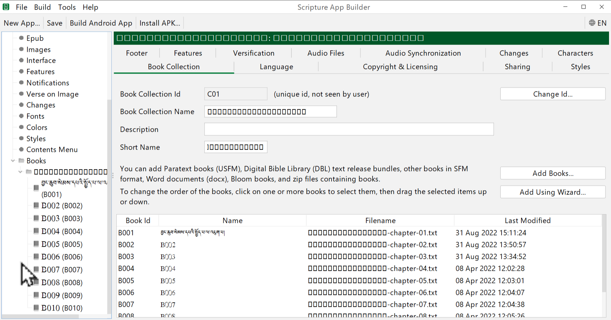
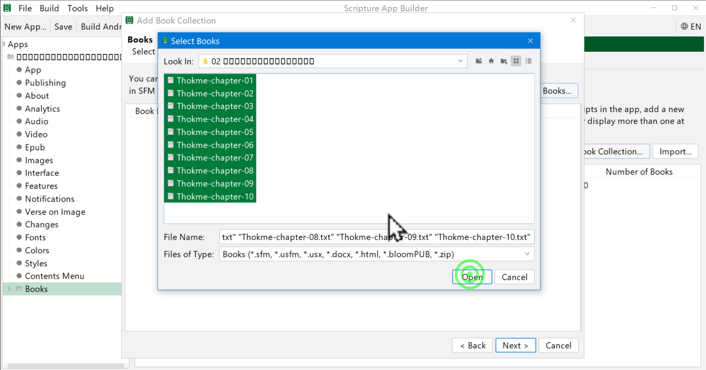

འདིར་SABམཉེན་ཆས་ནང་རྩ་འགྲེལ་གཉིས་སོ་སོར་འཇོག་ཚུལ་དང་དེ་དག་གི་ཁྱད་ཆོས་འདེམ་ཚུལ་ངོ་སྤྲོད་བྱས་ཡོད།
རྩ་འགྲེལ་མཉམ་སྦྱར་མཉེན་ཆས་བསྒྲིག་པ་ལ་ནང་གསེས་ཀྱི་སློབ་ཚན་ཁག་ལ་ངེས་ཆ་དང་བྱང་ཆ་ལྡན་དགོས་སོ།།
སློབ་ཚན་འདིའི་ནང་ངོ་སྤྲོད་བྱ་རྒྱུའི་ནང་དོན་ཁག་ལ་གཟིགས།
ཚོད་ལྟའི་དྲི་བ་རྣམས་ལ་ལན་རེ་ངེས་པར་དུ་འདེམ་རོགས། དེ་དག་ཐོག་མ་ནས་ཤེས་དགོས་པའི་ངེས་པ་མེད་པས་གང་རུང་ཞིག་འདེམ་ཆོག
གོང་དུ་སོང་ཟིན་པའི་ཐུན་མོང་གི་སྒྲིག་འགོད་སྒྲིག་ཚུལ་གྱི་དྲ་ཐག་འདི་ནས་གཟིགས།
ཕྱོགས་བསྒྲིགས་སྤྱིའི་མིང་འདོགས་ཚུལ་དང་རྩ་བ་ལེན་ཚུལ་སོགས་ངོ་སྤྲོད་བྱས་ཡོད།
👇 དེ་ཇི་ལྟར་བྱ་ཚུལ་ལ་གཟིགས།

སློབ་ཚན་གྱི་བརྙན། དྲ་ཐག་འདིར་སྣུན།
དྲི་བ། མཉེན་ཆས་ནང་རྩ་བ་སྣོན་དུས་རང་ལ་གང་གནོན་དགོས།
Add Books༽ (正确回答)
Add Using wizard༽
Add Book Collections༽
ཕྱོགས་བསྒྲིགས་སྤྱིའི་མིང་འདོགས་ཚུལ་དང་འགྲེལ་བ་འཇོག་ཚུལ་སོགས་ངོ་སྤྲོད་བྱས་ཡོད།
👇 དེ་ཇི་ལྟར་བྱ་ཚུལ་ལ་གཟིགས།

སློབ་ཚན་གྱི་བརྙན། དྲ་ཐག་འདིར་སྣུན།
དྲི་བ། རྩ་འགྲེལ་གཉིས་ཀྱི་ལེའུའི་མཚམས་ཀྱི་མིང་བརྗེ་ཚུལ་ལ་ཁྱད་པར་ཡོད་དམ།
མི་ཤེས།༽ མེད།༽ (正确回答) ཡོད།༽
མཉེན་ཆས་ནང་ཤོ་ལོ་ཀའི་ཨང་དང་འཚོལ་ཞིབ་སོགས་ཀྱི་རྣམ་པ་འདེམ་གསེས་བྱ་ཚུལ་ངོ་སྤྲོད་བྱས་ཡོད།
👇 དེ་ཇི་ལྟར་བྱ་ཚུལ་ལ་གཟིགས།
སློབ་ཚན་གྱི་བརྙན། དྲ་ཐག་འདིར་སྣུན།
དྲི་བ། Annotationཡི་སྡེ་ཚན་ནས་འགྲིག་རྟཊ་འདོར་དགོས་པ་ཡོད་དམ།
མི་ཤེས།༽ ཡོད།༽ མེད།༽ (正确回答)